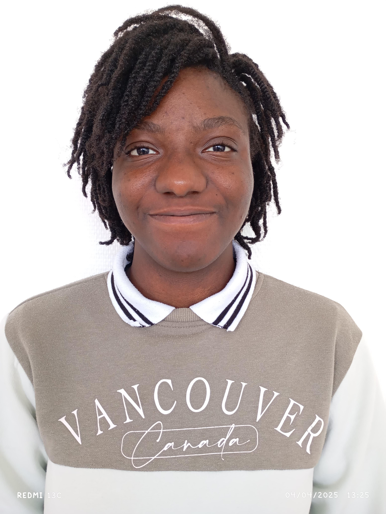

Boukola GBAYE
Bonjour ! Je suis étudiante en BUT Science des Données. Ceci est mon blog et portfolio personnel.
À propos de moi

Je suis Boukola GBAYE, étudiante en BUT Science des Données à Lisieux. Passionnée par les sciences,
j'ai découvert un réel intérêt pour la science des données et son rôle clé dans la compréhension
du monde moderne.
J’aime relier mes goûts pour les statistiques, les mathématiques, la programmation et
leurs applications concrètes dans divers domaines.
Ce que j’apprécie particulièrement, c’est l’automatisation pour gagner en efficacité,
l’analyse des tendances dans les données, et la richesse des échanges en équipe.
La dimension interdisciplinaire du domaine me permet d’explorer de nouveaux secteurs et d’apprendre
constamment, rendant la discipline stimulante et formatrice.
Je crois en la puissance des données pour éclairer les décisions et améliorer la vie. Mon objectif
est de contribuer à des projets innovants et impactants.
Mon parcours
- 2024 - 2026
-
BUT Science des Données - IUT GON Campus de Caen, pôle de Lisieux
Apprentissage axé sur les statistiques et l'informatique avec du travail en équipe sur des projets concrets, liant technique et expertise métier
- 2022 - 2024
-
CPGE - Institut de mathématiques et de Sciences Physiques (Bénin)
Formation en mathématiques, physiques et sciences de l'ingénieur.
- 2022
-
Baccalauréat scientifique, série C, mention très-bien - CS La Rose (Bénin)
Troisième au plan national et première parmi les filles.
Mes projets
Contact
Vous pouvez me contacter à l'adresse email : laurence.gbaye@gmail.com
Ou via mes réseaux sociaux :